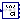
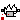

Utility components used by the example models
Extends from Modelica.Icons.UtilitiesPackage (Icon for utility packages).
| Name | Description |
|---|---|
|  DirectInertia | Input/output block of a direct inertia model |
| InverseInertia | Input/output block of an inverse inertia model |
| SpringDamper | Input/output block of a spring/damper model |
| Spring | Input/output block of a spring model |
|  SpringDamperNoRelativeStates | Linear 1D rotational spring and damper in parallel (phi and w are not used as states) |
Input/output block of a direct inertia model
Extends from Modelica.Blocks.Icons.Block (Basic graphical layout of input/output block).
| Name | Description |
|---|---|
| J | Moment of inertia [kg.m2] |
| Name | Description |
|---|---|
| tauDrive | Accelerating torque acting at flange (= -flange.tau) [N.m] |
| phi | Inertia moves with angle phi due to torque tau [rad] |
| w | Inertia moves with speed w due to torque tau [rad/s] |
| a | Inertia moves with angular acceleration a due to torque tau [rad/s2] |
| tau | Torque to drive the inertia [N.m] |
Input/output block of an inverse inertia model
Extends from Modelica.Blocks.Icons.Block (Basic graphical layout of input/output block).
| Name | Description |
|---|---|
| J | Moment of inertia [kg.m2] |
| Name | Description |
|---|---|
| phi | Angle to drive the inertia [rad] |
| w | Speed to drive the inertia [rad/s] |
| a | Angular acceleration to drive the inertia [rad/s2] |
| tau | Torque needed to drive the flange according to phi, w, a [N.m] |
Input/output block of a spring/damper model
Extends from Modelica.Blocks.Icons.Block (Basic graphical layout of input/output block).
| Name | Description |
|---|---|
| c | Spring constant [N.m/rad] |
| d | Damping constant [N.m.s/rad] |
| phi_rel0 | Unstretched spring angle [rad] |
| Name | Description |
|---|---|
| phi1 | Angle of left flange of force element [rad] |
| w1 | Speed to left flange of force element [rad/s] |
| tau1 | Torque generated by the force element [N.m] |
| phi2 | Angle of left flange of force element [rad] |
| w2 | Speed to left flange of force element [rad/s] |
| tau2 | Torque generated by the force element [N.m] |
Input/output block of a spring model
Extends from Modelica.Blocks.Icons.Block (Basic graphical layout of input/output block).
| Name | Description |
|---|---|
| c | Spring constant [N.m/rad] |
| phi_rel0 | Unstretched spring angle [rad] |
| Name | Description |
|---|---|
| phi1 | Angle of left flange of force element [rad] |
| tau1 | Torque generated by the force element [N.m] |
| phi2 | Angle of left flange of force element [rad] |
| tau2 | Torque generated by the force element [N.m] |
Linear 1D rotational spring and damper in parallel (phi and w are not used as states)
A spring and damper element connected in parallel. The component can be connected either between two inertias/gears to describe the shaft elasticity and damping, or between an inertia/gear and the housing (component Fixed), to describe a coupling of the element with the housing via a spring/damper.
This is the same element as Rotational.Components.SpringDamper but with the only difference, that the relative quantities are not used as states. If the relative states are potentially used as states, "a_rel = der(w_rel)" is present, and then exporting this model as FMU requires to also have the accelerations in the flanges as inputs, which is usually not desired for a force element.
Extends from Modelica.Mechanics.Rotational.Interfaces.PartialCompliant (Partial model for the compliant connection of two rotational 1-dim. shaft flanges), Modelica.Thermal.HeatTransfer.Interfaces.PartialElementaryConditionalHeatPortWithoutT (Partial model to include a conditional HeatPort in order to dissipate losses, used for textual modeling, i.e., for elementary models).
| Name | Description |
|---|---|
| c | Spring constant [N.m/rad] |
| d | Damping constant [N.m.s/rad] |
| phi_rel0 | Unstretched spring angle [rad] |
| useHeatPort | =true, if heatPort is enabled |
| Initialization | |
| phi_rel | Relative rotation angle (= flange_b.phi - flange_a.phi) [rad] |
| Name | Description |
|---|---|
| flange_a | Left flange of compliant 1-dim. rotational component |
| flange_b | Right flange of compliant 1-dim. rotational component |
| heatPort | Optional port to which dissipated losses are transported in form of heat |